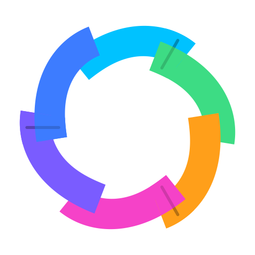

MultitoolDescription
Multitool is a desktop utility that brings project-aware development tools and plugin actions into a fast, configurable overlay.
Downloads
| OS | Arch | Version | Download |
|---|---|---|---|
| Windows | x64 | 0.3.16 | Download |
| macOS | arm64 | 0.3.16 | Download |